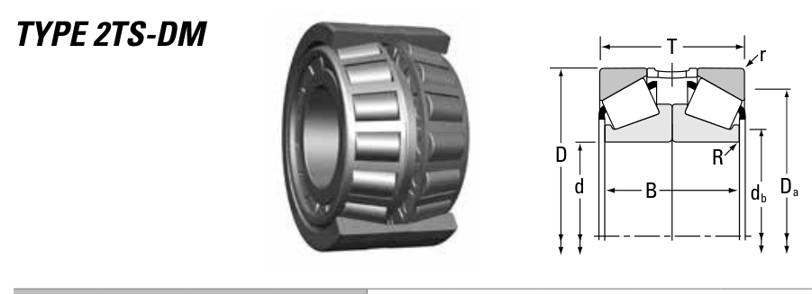

Original catalogue drawing - Timken TRB Catalog, page 718

Scanned from the manufacturer catalogue page listing this part number. All part numbers printed on that table share the same drawing.
Scale cross-section
Blue = inner / outer ring, yellow = rolling element. Drawn to scale from this part's own
dimensions for selection reference only - not a manufacturing or assembly drawing.
Dimension table (mm / inch)
Symbol
Dimension
mm
inch
d
Bore diameter
200
7.874
D
Outside diameter
310
12.2047
B
Inner-ring / bearing width
140
5.5118
T
Overall assembly width
140
5.5118
Notes
Tapered roller bearings are cone / cup assemblies; cone and cup weights are listed separately and the total is their sum. Weights are given in kg. Load ratings are shown in both the original catalogue units and the converted value (1 N = 0.2248 lbf). Data is provided for selection reference only - confirm against the latest official catalogue before ordering.
Main dimensions
Bore d (mm)
200.000
Bore d (in)
7.8740
Outside dia. D (mm)
310.000
Outside dia. D (in)
12.2047
Width B (mm)
140.000
Width B (in)
5.5118
Overall width T (mm)
140.000
Overall width T (in)
5.5118
Load ratings & speeds
Basic dynamic load rating Cr (lbs)
332000
Basic dynamic load rating Cr (N)
1480000
Dynamic rating C1 (N, ISO)
1480000
Dynamic rating C1 (lbf, ISO)
332000
Radial rating C90 (N)
220000
Radial rating C90 (lbf)
49400
Thrust rating Ca90 (N)
162000
Thrust rating Ca90 (lbf)
36400
Factor e
0.43
Factor Y1
1.57
Factor Y2
2.34
Factor K
1.36
Weight
Weight (kg)
39.08
Mounting dimensions (fillets / shoulders)
Shaft shoulder db (mm)
220.0
Housing shoulder Da (mm)
284.0
Bearing life (ISO 281 basic rating life)
C / P
Equivalent load P (N)
L10 (106 rev)
L10h at 500 rpm
4
370,000
102
3,386
6
246,667
392
13,083
8
185,000
1,024
34,133
10
148,000
2,154
71,814
15
98,667
8,323
277,449
Basic rating life per ISO 281: L10 = (C/P)10/3 with C = 1,480,000 N. Hours = L10 x 106 / (60n). Life-modification factors for lubrication, contamination and temperature (aISO) are not included.
Source & traceability
Brand
Timken
Source catalogue
Timken Tapered Roller Bearing Catalog (2016)
Catalogue page
p.718 (dimensions)
Series type
TS
ISO dynamic rating C1, Timken C90 / Ca90, static rating C0, geometry factors and assembly weight.
Send us the quantity you need and we will come back with price and
lead time, normally within 24 hours. Equivalent parts from other brands can be quoted at the same time.